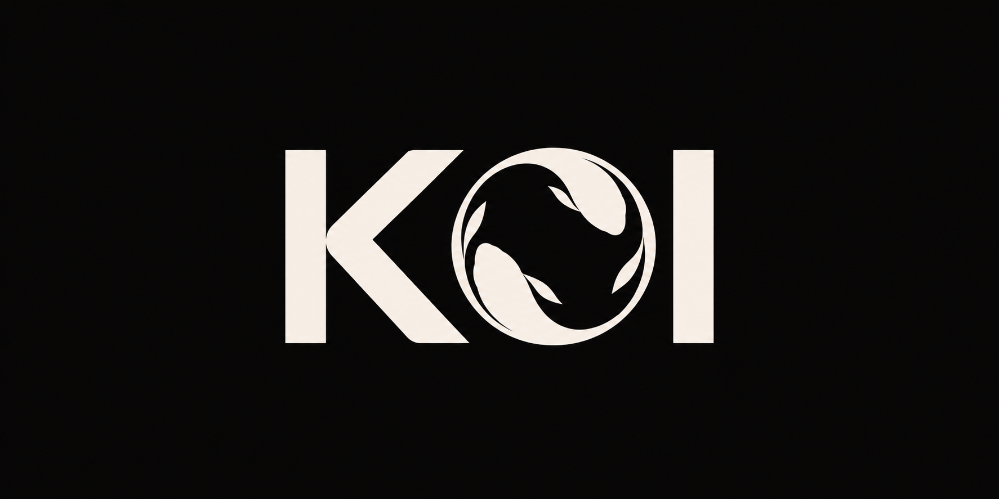
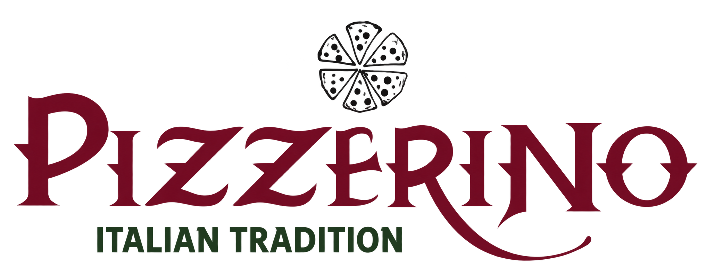

Web Seek
A prospecting workspace for freelance web developers. Discover businesses, save leads, and keep outreach notes and follow-up status in one place.

kelvin.dev// hello, world. i’m kelvin.
I build useful, human-centered software, connecting thoughtful interfaces with the logic that makes them work.
// 01 — about
I’m Kelvin, a software engineer who likes connecting ideas, people, and the details that make a product work.
My experience spans digital marketing, operations, e-commerce, and community programming. It gives me a practical starting point for development, understanding who something is for and what they need it to do.
Today, that shows up in full-stack applications, client websites, and digital experiences. I enjoy working through the whole problem, from the interface to the data behind it.
Off-screen, you might find me following the Celtics, or connecting with nature, or sharing a brand new playlist.
// the toolkit
From what someone sees to what happens behind the scenes. Open a drawer to see how the pieces come together.
I use these to turn an idea into an interface people can explore, from a clear event listing to feedback after a click.
See the interface in CivicalThe structure behind the experience, handling requests and keeping information organized so people can come back to what matters.
Explore saved prospects in Web SeekConnecting apps to useful data, giving users a way to sign in, and keeping track of changes as a project grows.
See Spotify and sign-in in Vinyl Room// 02 — selected work
From a useful idea
to something you can click.
A prospecting workspace for freelance web developers. Discover businesses, save leads, and keep outreach notes and follow-up status in one place.

Music recommendations with a community behind them. Share songs, vote for favorites, and discover new sounds, with authentication and Spotify album artwork.

A place for local happenings. Browse upcoming events by date, post a listing, and manage event details with a complete CRUD workflow.

Helped bring the Flynn’s digital playbill to audiences through InstantEncore, making program information easier to access and update.

// client work — in progress
A website for a local pizzeria, focused on helping customers find the menu and plan their visit. Homepage development is underway, with menu and ordering details still being refined.
// more from the workbench
Earlier projects & experiments
// 03 — beyond the code
The same attention to people,
through a different medium.
I developed recurring campaigns including Foodie Favorites, Retailer of the Month, and Shop Local Spotlight to help shoppers discover retailers across social and web channels.
Top-performing content reached 20K+ views. 26% of featured retailers reported increased customer traffic following their campaign.
 Seasonal campaigns / Outdoor Gear Exchange
Seasonal campaigns / Outdoor Gear ExchangeI supported seasonal campaigns using Ahrefs and SEMrush to identify trending keywords and improve product titles and descriptions. I also tested messaging and photography for audiences segmented by purchase history and location.
Messaging and geographic targeting were refined around customer interests.
 Community programming / Burlington Juneteenth
Community programming / Burlington JuneteenthI supported marketing strategy and promotion for Burlington’s Juneteenth celebration, working across audience outreach, sponsorship materials, community partners, performers, and social content.
// 04 — let’s connect
Building a team, working through an idea,
or just want to say hello? I’d love to hear from you.